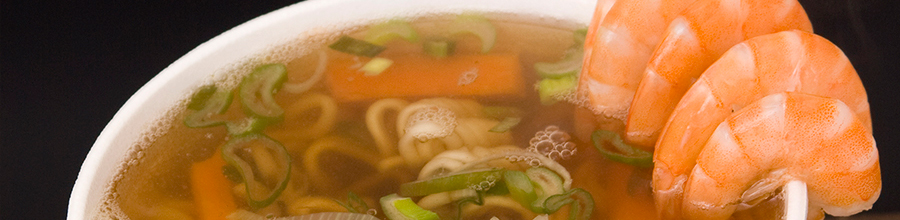
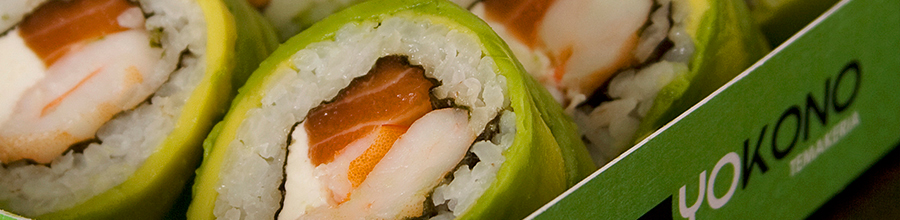
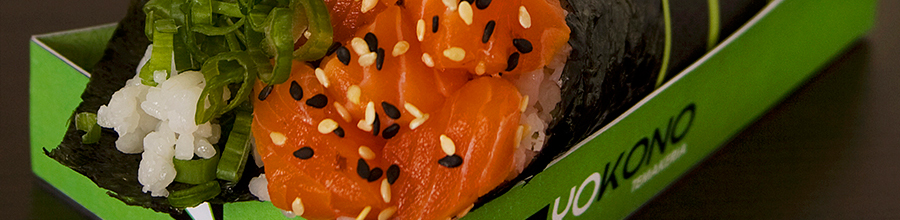

HistoriaLos origenes de nuestros locales
Tras recorrer y observar las tendencias gastronómicas en países como Japón, Brasil, USA y Argentina, los creadores de Yokono deciden plantear un concepto innovador en restaurantes.
Ante un mercado saturado de restaurantes de sushi, Yokono se plantea como un lugar donde se puede comer saludable, muy rico, rápido y a un precio accesible. La diferencia que marca Yokono está en concentrar la oferta en productos innovadores como el Temaki (la especialidad) y el Gohan. Se destaca además por un concepto de diseño que sobresale.
Asi, Yokono ha inagurado su primer local en marzo del 2010, en el barrio de Providencia, en Junio 2011 instala su segundo local en el centro de Santiago y hoy ya cuenta con tres locales en Santiago y sigue creciendo.
Yokono es el primer restaurante de comida rápida Japonesa, que propone una nueva forma de comer sushi: saludable, rápida, muy rica, de gran calidad y a un precio accesible.
© 2013 YOKONO